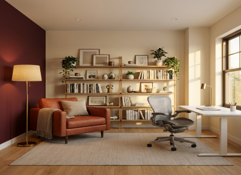

Define
Translate a mood or spatial goal into observable visual decisions.
Interactive sketch
Click or tap to leave a stitched mark.
DSC 598 · AI FOR INTERDISCIPLINARY DESIGN · FALL 2026
Two projects exploring how precise prompts, visual systems, and focused iteration can shape an image and a space.
MIDTERM PROJECTS
The work shown here comes directly from my Week 4 and Week 6 process presentations.

AI IMAGE-MAKING · ART DIRECTION
A measurable visual system turns the quiet anxiety of Gracie Abrams' “Mess It Up” into one embroidered heart and a loose thread.
View case study →
AI ENVIRONMENT DESIGN · SPATIAL SYSTEM
A warm minimalist sanctuary organized into reading, display, and work zones through exact color, furniture, and lighting prompts.
View case study →WHAT I EXPLORED
Translate a mood or spatial goal into observable visual decisions.
Use placement, scale, color values, and constraints to check what changed.
Change one variable at a time, preserve what works, and verify the result.
ABOUT THIS PORTFOLIO
Each project began with a specific intention, developed through documented prompt iterations, and ended with a final result tested for consistency and clarity.
Created by Shreya Ramanan for DSC 598: AI for Interdisciplinary Design.